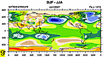

C96_t233_wg37.B1850C_LTso.taiesm2_dev_3b09.tn01_auto30_a2l30DIAG Set 9 - Horizontal contour plots of DJF-JJA differences
| Legates & Willmott 1920-80 | ||
|---|---|---|
| TREFHT * | 2-meter air temperature | plot |
| MERRA Analysis 1979-2013 (NASA) | ||
| PREH2O * | Precipitable water | plot |
| PSL * | Sea-level pressure | plot |
| T 850 * | 850 mb temperature | plot |
| ERA40 Reanalysis 1980-2001 | ||
| PREH2O * | Total precipitable water | plot |
| T 850 * | 850 mb temperature | plot |
| ERA-Interim Reanalysis 1989-2005 | ||
| PREH2O * | Total precipitable water | plot |
| T 850 * | 850 mb temperature | plot |
| JRA25 Reanalysis 1979-04 | ||
| PREH2O * | Total precipitable water | plot |
| T 850 * | 850 mb temperature | plot |
| AIRS IR Sounder 2002-06 | ||
| T 850 * | 850 mb temperature | plot |
| NVAP 1988-1999 | ||
| PREH2O * | Total precipitable water | plot |
| GPCP 1979-2009 | ||
| PRECT * | Precipitation rate | plot |
| CMAP (Xie-Arkin) 1979-98 | ||
| PRECT * | Precipitation rate | plot |
| ERBE Feb1985-Apr1989 | ||
| LWCF * | TOA longwave cloud forcing | plot |
| SWCF * | TOA shortwave cloud forcing | plot |
| CERES-EBAF March 2000-Feb 2013 | ||
| LWCF * | TOA longwave cloud forcing | plot |
| SWCF * | TOA shortwave cloud forcing | plot |
| CERES 2000-2003 | ||
| LWCF * | TOA longwave cloud forcing | plot |
| SWCF * | TOA shortwave cloud forcing | plot |
| ISCCP D2 Jul1983-Sep2001 | ||
| CLDTOT | Total cloud amount | plot |
| CLOUDSAT (Radar+Lidar) Sep2006-Dec2010 | ||
| CLDTOT | Total cloud amount | plot |